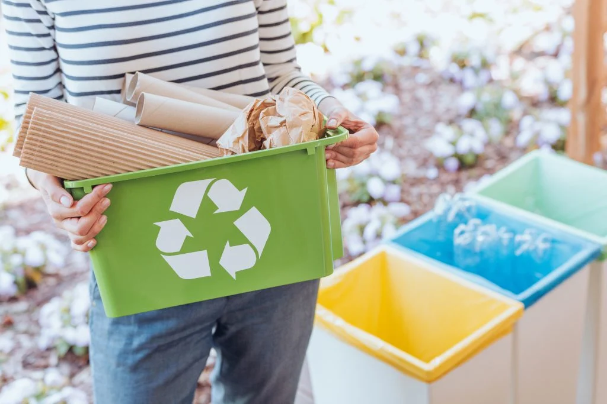

<div class="container-fluid flex-column background d-flex justify-content-center align-items-center p-3">
    <div class="sobre">
        <div class="card p2 text-center">
            
            <div class="card-body text-light bg-dark">
                <h3 class="card-title text-center p-1">Conheça os Materiais Recicláveis</h3>
                <p class="card-text p-1 mb-5">
                    O primeiro passo é entender quais materiais são recicláveis. Papel, vidro, metal e plástico
                    são os mais comuns, mas é importante saber que nem todos os itens feitos desses materiais
                    podem ser reciclados. Por exemplo, papel com resíduos de comida ou plástico muito fino podem
                    não ser aceitos nos centros de reciclagem. Informe-se sobre as políticas locais de reciclagem
                    para evitar erros.
                </p>

                <h3 class="card-title text-center p-1">Separe os Resíduos Corretamente</h3>
                <p class="card-text p-1 mb-5">
                    A separação correta dos resíduos é crucial para o sucesso da reciclagem. Crie um sistema de separação
                    em casa que funcione para você e sua família. Isso pode significar ter diferentes lixeiras para materiais
                    recicláveis e não recicláveis. Lembre-se de lavar os recipientes de plástico, vidro e metal para remover
                    resíduos de alimentos, o que pode contaminar outros materiais recicláveis.
                </p>

                <h3 class="card-title text-center p-1">Reduza, Reutilize, Recicle</h3>
                <p class="card-text p-1 mb-5">
                    Antes mesmo de reciclar, pense em como você pode reduzir o consumo de materiais descartáveis e reutilizar
                    itens. Por exemplo, opte por sacolas reutilizáveis em vez de sacolas plásticas descartáveis e considere
                    comprar produtos com menos embalagens. Quando a reutilização não for possível, aí sim recicle.
                </p>

                <h3 class="card-title text-center p-'">Informe-se Sobre os Pontos de Coleta</h3>
                <p class="card-text p-1 mb-5">
                    Saber onde levar seus recicláveis é tão importante quanto separá-los. Muitas cidades oferecem coleta
                    seletiva, mas também existem pontos de entrega voluntária. Faça uma pesquisa para encontrar os locais
                    mais convenientes para você e lembre-se de que alguns materiais, como eletrônicos e baterias, requerem
                    pontos de coleta especializados.
                </p>

                <h3 class="card-title text-center p-1">Engaje-se Com a Comunidade</h3>
                <p class="card-text p-1 mb-5">
                    A reciclagem pode ser uma atividade comunitária. Participar de programas locais de reciclagem ou eventos
                    de limpeza pode aumentar o impacto das suas ações. Além disso, compartilhar conhecimentos e experiências
                    sobre reciclagem pode inspirar outros a começarem. Considere usar as redes sociais ou grupos comunitários
                    para espalhar a palavra.
                </p>

                <p class="card-text"><small>Começar a reciclar é um passo importante para viver de maneira mais sustentável.
                    Ao seguir estas dicas, você pode fazer a diferença no mundo, reduzindo o desperdício e apoiando a economia
                    circular. Lembre-se, cada pequeno gesto conta quando se trata de proteger nosso planeta para as gerações futuras.</small>
                </p>

                <p class="card-text"><small>Reciclar é mais do que uma ação ambiental; é um compromisso com o futuro do
                    nosso planeta. No entanto, começar pode parecer desafiador para muitos. Pensando nisso, compilamos
                    cinco dicas práticas para facilitar o início da sua jornada de reciclagem. Vamos transformar boas
                    intenções em ações concretas!</small>
                </p>
            </div>
        </div>
    </div>
</div>